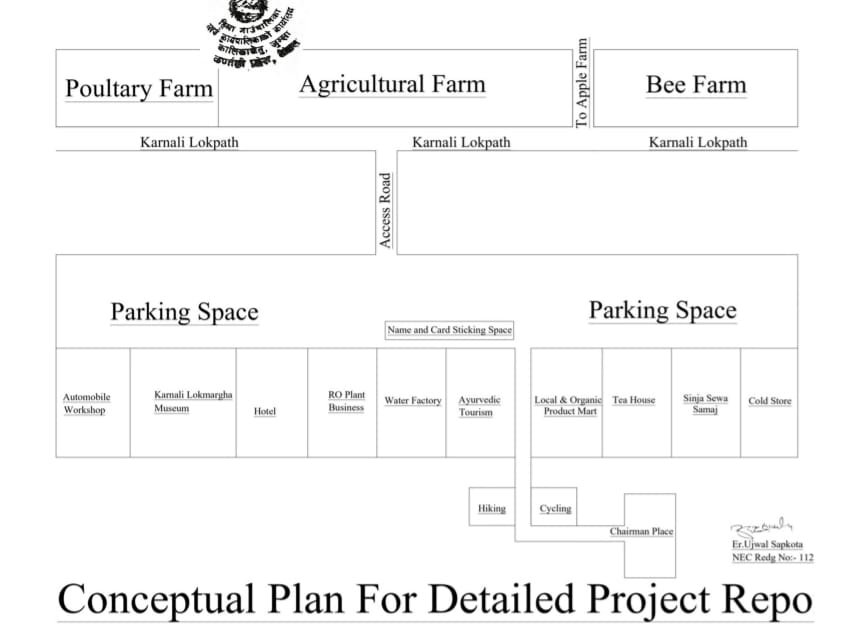

खस आर्यहरूको उत्पत्ति थलो, हिजोको सिजा साम्राज्य को राजधानी लामाथाडा नागराजले राज्य गरेको ठाउँ कनका सुन्दरीको कोट, पुरातात्विक मन्दिर, कनका सुन्दरी माई द्रौपदी ५ भाइ पाण्डव बसेको पाण्डव गुफा, हिमाली, प्रकृतिकाे खोजबाट कैलाशमा मानसरोवर हुँदै हिउ पग्लेर बग्दै आएको हिम नदी, पाटैफाट परेको मार्सी धान पाक्ने खेत, त्यहीको माटो ढुङ्गाले निर्मित परम्परागत घर, गाउँ , टोल ,खस सभ्यताको पहिरन लुगा, कपडा परापूर्व कालदेखि उत्पादन गरिने स्थानीय उनका लुगा, चाँद बाट उत्पादित गरेका दुन, गलैचा, राडीपाखी, हस्तकला र शिल्पकलाबाट निर्मित काठका विभिन्न मुदुस,खाट, भकारी स्यानी निङ्गाला , बाट तयार गरिएका डोका ,छाप्री ,कचौरा हिमाली जिल्लामा पाली नै पशुपालन गाई, घोडा ,भेडा, च्याङ्ग्रा ,जस्ता घरपालुवा जनावरको श्रव्य दृश्य अवलोकन गर्नुका साथै त्यस ठाउँमा उत्पादन गरिने रैथाने बालीहरु जस्तै कोदो, फाफर , गहुँ , मकै ,जौँ, धान जस्ता अन्नबालीको उत्पादन बिक्री वितरण र तयार गरिएका खान्कीको स्वाद लिनका साथै यसको अवलोकन गर्ने हेर्ने देख्ने समेत मौका मिल्नेछ। आरु , ओखड , स्याउ जस्ता फलफुल फुल्दै गरेको दृश्यहरूको महोत्सवमा आकर्षक रहनेछ।
आन्तरिक तथा बाहिरीय पर्यटकलाई दुई दिन सिजा सभ्यता भएको ५१ किलोमिटर भित्रका दृश्य र मनोरम प्राकृतिक हाइकिङ, स्विमिङ ,साइकलिङ र भलिबल, फुटबल , रनिङ जस्ता खेल खेलाउनका साथै त्यस क्षेत्रको लोक-संस्कृति, देउडा खेल, भारी खेल, हुड्के नाच जस्ता स्थानीय खेलबाट आनन्दित गराई तेस्रो दिन नेपालको सबैभन्दा ठूलो र अग्लो ठाउँमा अवस्थित रारा तालकाे भ्रमण तथा अवलोकन गराई प्राकृतिक र सांस्कृतिक अन्तरक्रिया रारा तालमै त्यसपछि सम्बन्धित उद्यम मा पर्यटकलाई फिर्ता गराई आवश्यक ठानेका लगजरियल पर्यटकहरूले संसारको सबैभन्दा महँगो गन्तव्य प्रकृतिको अनुपम खानी रहेका पाटनहरूमा हेलिकप्टर मार्फत उक्त ठाउँमा गई यार्सा गुम्बा सङ्कलन गर्दै गरेका आम समुदायसँग भेट गरा उक्त स्थानमा विभिन्न गेम खेलाई स्थानीय लामा भोटे नाच बाट मनोरञ्जन गराउँदै साँझ पाख फेरि हेलिकप्टर मार्फत सम्बन्धित उद्यममा ल्याइनेछ आन्तरिक तथा बाहिरी पर्यटकहरूलाई मनोरञ्जन र रमाइलो का लागि ३५०० मिटरदेखि ४६०० मिटरसम्म मा सो ठाउँमा बहु-गुणी जडीबुटी यार्सा गुम्बाे को सङ्कलन गरिरहेका ठाउँ र समुदायसँग सोके प्रशिक्षण, तालिम का साथै आफ्नो अनुभव आदान प्रदान गरी तीन वटा गेम रनिङ, कबड्डी र भलिबल खेल खेलाई साँझ आफ्नो गन्तव्य बृहत उद्यम सिजा खोलामा फर्काइनेछ। यसका लागि छुट्टै चार्ज लाग्नेछ ।यो गन्तव्य विश्वकै एक नमुना बन्ने छ। यो यात्रामा + २ दिन थप गरी ६ दिनको गन्तव्य हुनेछ।
महोत्सवमा जानका लागि सिंजादेखि रूप पाटन यार्सा गुम्बो सङ्कलन गर्ने ठाउँ सम्म हेलिकप्टर बाट जान, बस्न खान र घुम्न का लागि निम्न बमोजिम खर्च लाग्नेछ।
१) एक जानका लागि हेलिकप्टर गन्तव्य सहित ६ दिने = १२ लाख $ ८८६२.२२ (संसारको पर्यटकका लागि बुकिङ खुला छ।)।
२) रारा ताल बाट सिंजा सभ्यता खान बस्न र घुमघामका लागि चार दिनसम्म प्रति= ६ लाख $ ४४३१.११।(संसारका आन्तरिक तथा बाहिरी पर्यटकका लागि बुकिङ खुल्ला छ।)
प्रस्ताव डाउनलोड गर्न तल क्लिक गर्नुहोस्:s
प्रस्ताव
मिडिया विज्ञापन साझेदार: समृद्धि मिडिया विज्ञापन एजेन्सी
सम्पर्क जानकारी:
नाम: पूर्ण प्रसाद आचार्य
सम्पर्क नम्बर: +९७७-९८४९०२६९१९
इमेल: purnaacharyaa@yahoo.com
बैंक विवरण:
खाता नाम: समृद्धि मिडिया विज्ञापन एजेन्सी
खाता नम्बर: २१७००११०६३८५५००००००१
कान्तिपथ-शाखा, काठमाडौं